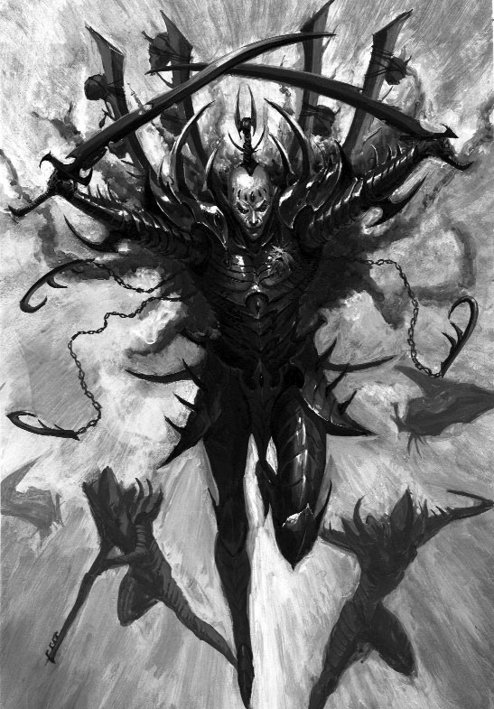

Архонты кабалов тёмных эльдар - истинные правители Комморры. Они сидят на самой вершине пирамиды иерархии, управляя своими сумеречными владениями. У них хватает влияния, чтобы разрушить отдельные участки реального пространства, остановить имперский крестовый поход или похитить население целых планет. Владыка кабала всегда представляет собой внушающего страх оппонента в бою, однако он добился высокого положения не только с помощью своего мастерства в искусствах войны или грубого устранения слабых, но и благодаря тому, что раз за разом выходил победителем в самой хитроумной борьбе из всех - плетении интриг в сердце Тёмного города.
Сродни змее каждый архонт ядовит словом и делом. Его разум настолько же запутанный, насколько и тёмнейшие области паутины. В конце концов, находиться на самой вершине власти означает быть видной мишенью для других. Хотя все архонты самодовольны, страдают манией величия и уверены в собственном превосходстве, они удерживают правление лишь до тех пор, пока способны предотвращать перевороты и попытки покушения со стороны соперников, врагов и своих помощников - драконтов. Даже один неверный шаг в среде высших эшелонов власти Тёмного города неизбежно приведет к смертельному исходу. По этой причине архонты наделены сверхъестественной способностью предвидеть чужие махинации, благодаря чему они получают истинное удовольствие от использования подготовленных для них ловушек против своих же недоброжелателей.
Несмотря на замысловатое хитросплетение обязательств верности в Тёмном городе, владыки кабалов, словно змеи, оборачиваются вокруг тех, кто старается победить их в смертельной игре. Безграничные амбиции подчиненных поддерживают обостренное чувство паранойи архонтов, отчего они по-настоящему преуспевают в деле раскрытия предательства. Порой бывает, что их стратегии длятся тысячелетиями, одни события приводят к вращению механизмов других, и в итоге растянутые на столетия тактические ходы дают свои результаты. Некоторые Повелители Сумрака, что правят из высочайших шпилей Комморры, даже утверждают, что завладели своим троном ещё во времена до Падения. Эти старейшие архонты смотрят на остальных представителей своей расы, как на ссорящихся детей, но без снисходительного отношения к их глупости. Единственное неуместное слово может вызвать смертельный гнев архонта, и в отношении иерархии кабала архонт исключительно со злости попытается найти такой метод решения проблемы, который затронул бы все остальные внутренние
группы.